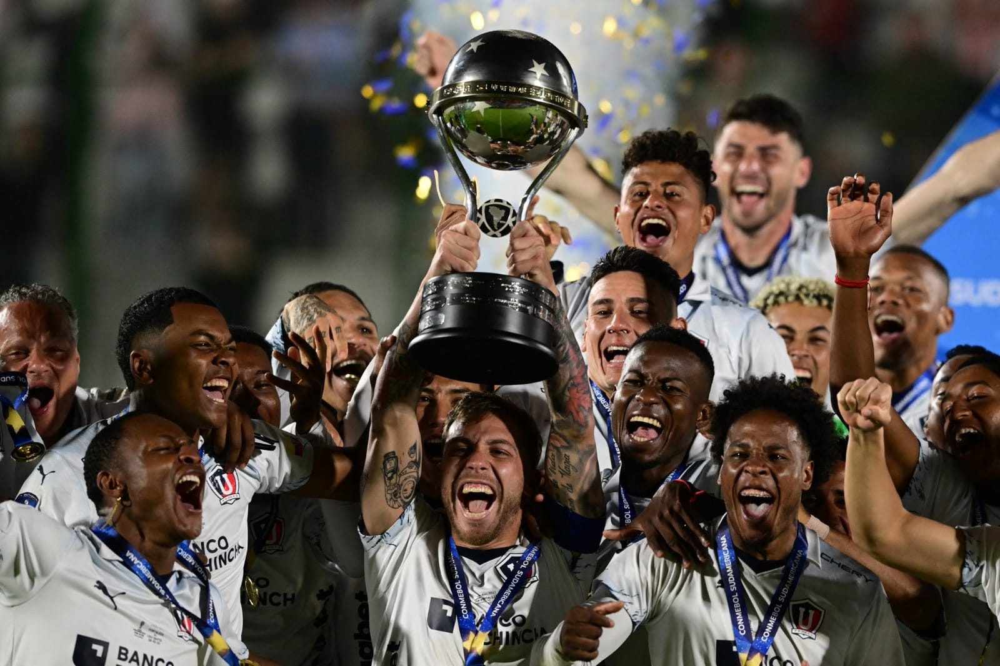

Copa Sud Americana
Liga de Quito se ha destacado en la Copa Sudamericana, siendo uno de los clubes más exitosos del
torneo. Han levantado el trofeo en dos ocasiones, demostrando su jerarquía continental. Sus
victorias, tanto en 2009 como en 2023, son un testimonio de su capacidad competitiva y su solidez
como equipo. Conquistaron el título en 2009 frente a Fluminense y repitieron la hazaña en 2023 ante
Fortaleza, en una final dramática que se definió en penales. Además de sus triunfos, también
disputaron la final de 2011, aunque no lograron llevarse el título en esa ocasión. LDU lidera la
tabla histórica de victorias en la Sudamericana, con un total de 46 partidos ganados, resaltando su
consistencia y dominio en el torneo. Sumado a sus logros en Sudamericana, también han conquistado la
Copa Libertadores y la Recopa Sudamericana. En definitiva, Liga de Quito ha dejado una huella
imborrable en la historia de la Copa Sudamericana, consolidándose como un referente del fútbol
ecuatoriano a nivel internacional.
Ser un club deportivo de referencia a nivel nacional e internacional, reconocido
por su excelencia deportiva, su compromiso social, la formación integral de sus deportistas y la
pasión incondicional de su afición. Queremos ser un símbolo de Quito y del Ecuador, transmitiendo
nuestros valores a las futuras generaciones.